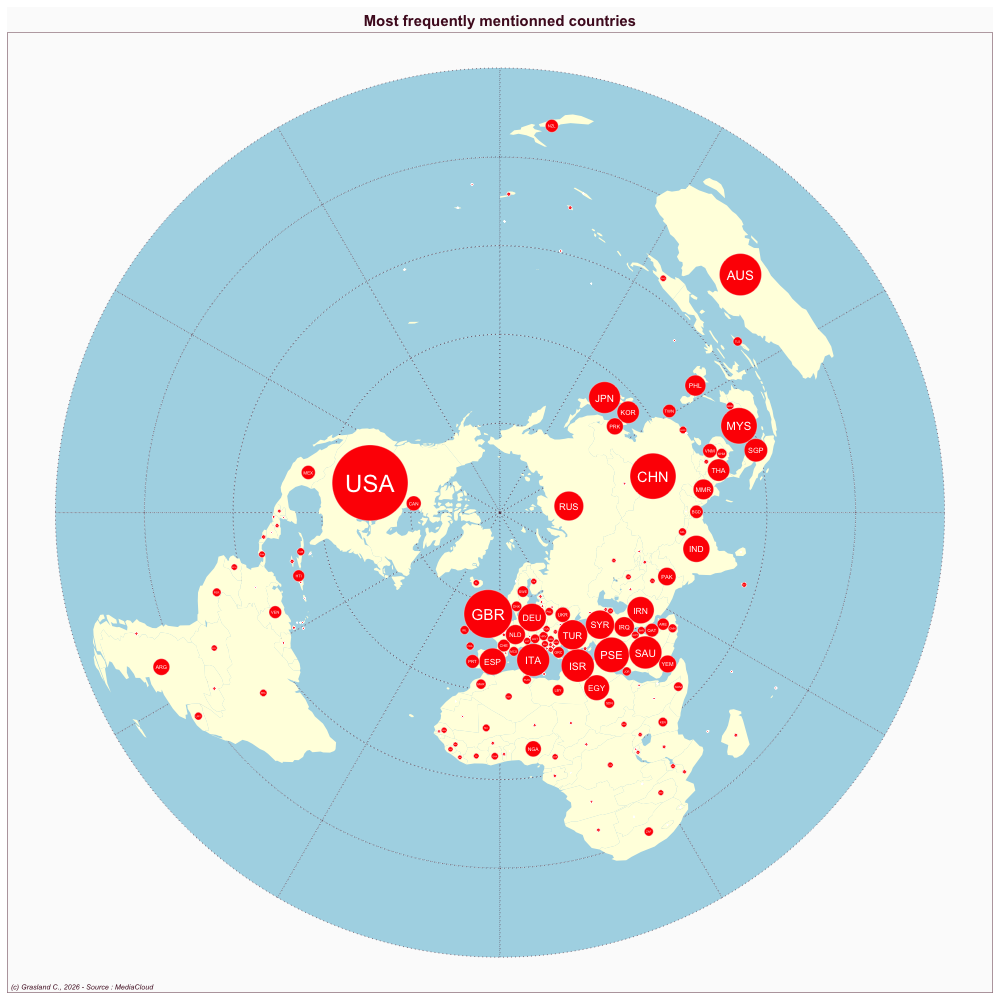

Indonesia
- Website : Republika
Scale
- Global
- National
Topics
- General news
- Political news
- Economic news
Publications
Widyadhana RD, Sandy F, Susanti D. 2025. Framing analysis of republika and BBC news indonesia on the conflict of palestine-israel. BIS Humanities and Social Science 2: V225053–V225053